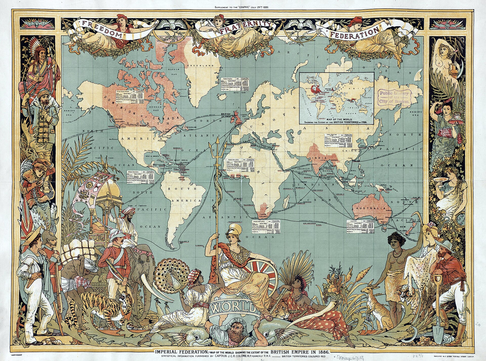

Meoncross School | History Department
Edition 2026.1
Industrialisation, Empire, and Power: How did 19th-century Britain transform at home and
abroad?
KS3: Industrialisation, Empire, and Power (1750–1900)
PROGRESS & ASSESSMENT TRACKER
Target Grade: _________
|
Level
|
Emerging (1-2) |
Emerging+ (3) |
Expected (4-5) |
Expected+ (6-7) / Greater Depth (8-9)
|
|
Lesson / Assessment Title
|
Effort
|
Level
|
Teacher Comments |
|
L1: What powered the Industrial Revolution, and how did a Fareham ironmaster change
the world?
|
|
|
|
|
L2: Was industrial work progress or punishment?
|
|
|
|
|
L3: Did industrialisation make British towns unlivable?
|
|
|
|
|
L4: How was the British Empire built and sustained?
|
|
|
|
|
L5: How did the Empire strike back? The 1857 Indian Rebellion
|
|
|
|
|
L6: How did ordinary people fight for a voice?
|
|
|
|
|
L7: How did the road to democracy expand?
|
|
|
|
|
L8: Who truly benefited from 19th-century transformation?
|
|
|
|
|
Final Unit Grade:
|
|
|
|
L1: What powered the Industrial Revolution, and how did a Fareham ironmaster change the world?
Learning Objectives
Explain how the transition from the domestic system to coal and Watt's steam engine
liberated manufacturing from river valleys.
Analyse how Henry Cort's twin inventions at Funtley (puddling and rolling) solved the
Royal Navy's pig iron crisis, and evaluate the surviving physical archaeology at the site.
Evaluate whether Henry Cort's triumph was driven primarily by geographical proximity to
Portsmouth Dockyard or technological genius.
Do Now Activity
Score: / 5
What military structure did William the Conqueror build across England after 1066 to
intimidate the Anglo-Saxons?
What deadly pandemic struck England in 1348, wiping out over a third of the population?
What religious movement did Martin Luther launch in 1517 that divided European
Christianity?
What major naval invasion fleet sent by Philip II of Spain was defeated by England in
1588?
What was the difference between a primary source and a secondary interpretation?
Vocabulary Check
The Odd One Out: Select THREE terms that share a close historical
connection. Identify which ONE remaining term is the 'Odd One Out' in this lesson, and
explain your historical reasoning:
Industrial Revolution | Domestic System | Henry Cort
| Pig Iron | Wrought Iron | Puddling Process
| Grooved Rolling Mill | Portsmouth Dockyard |
Iron Slag | Mill Race & Weir | Fareham Tallboys
Q1 What does Source A reveal about how the Industrial Revolution transformed the
physical landscape of Britain from countryside into a fiery industrial
environment?
Q2 How does Source B demonstrate that Funtley Ironworks combined chemical innovation
with mechanical mass production?
Q3 Why was this Admiralty report from Portsmouth Dockyard the ultimate validation of
Cort’s local experiments at Funtley?
Q4 Why would contemporaries compare an 18th-century Hampshire ironmaster to the
biblical first metalworker Tubal Cain, and what does this reveal about Britain’s growing
industrial pride?
Q5. The Iron Bottleneck: Trace the kinetic chain from Watt’s steam engine to
Britain’s strategic crisis. Complete the missing causal link in Step 3.Causal Chain
Using paragraphs [1.2] and [1.3], trace how steam innovation led directly to a dangerous
national dependence on foreign imports.
Step 1: Catalyst
1776
Watt's Steam Engine
Rotative steam engines power mechanized textile mills, mines, and heavy machinery
across Britain.
➜
Step 2: Crisis
1780
Brittle Pig Iron
British coke blast furnaces produce brittle, high-carbon "pig iron" that shatters
under high-pressure steam.
➜
Step 3: Bottleneck
1783
Baltic Import Bottleneck
Britain imports 50,000 tons of malleable iron annually from Sweden and Russia.
Explain why relying on Swedish imports was a lethal danger for the Royal Navy
during wartime:
➜
Step 4: Breakthrough
1784
Cort's Funtley Process
Henry Cort masters the puddling furnace and grooved rollers on the River Meon,
securing domestic self-sufficiency.
Q6. Visual Blueprint: Identify and annotate the 4 key chemical and mechanical
features of Henry Cort's 1783 Funtley Puddling Furnace.Visual Anatomy
Using paragraph [2.3] and the 1783 technical cross-section (Source B), annotate each
numbered feature to explain how Cort solved the iron crisis.

Source B: Patent drawing cross-section of Cort's reverberatory puddling furnace at
Funtley.
1
Coal Combustion Firebox
What burns here, and why was coal previously banned from touching iron?
Raw pit coal burns here; coal sulfur was separated because...
2
Arched Reverberatory Roof
How did the curved brick ceiling heat the iron without direct fuel contact?
The arched brick ceiling reflects and bounces radiant heat...
3
The Fire Bridge (D)
What was the vital function of this raised brick baffle?
The brick fire bridge acted as a physical barrier to...
4
Puddling Hearth & Stirring Basin (A)
What physical action did the puddler perform through the side portal?
Workers vigorously stirred ("puddled") boiling iron with...
Q7. Forensic Scalpel: Interrogate Source C (Admiralty Papers ADM 106/2347). Extract
the exact 3–6 word phrase that convinced naval commissioners to adopt Funtley
iron.Forensic Scalpel
“We find it to exceed in strength and toughness any iron manufactured in this
kingdom, and fully equal to the best Swedish Orgrounds iron for ship bolts, mast hoops,
and anchors for His Majesty’s Fleet.”
Underline in the source text above, then copy the exact 3–6 word "smoking gun" quote:
[ “ . . . . . . . . . . . . . . . . . . . . . . . . . . . . . . . . . . . . . .
. . . . ” ]
Why is this phrase decisive? Why did this specific comparative phrase
guarantee that the Royal Navy would endorse Cort’s Funtley ironworks?
This phrase was decisive because Swedish Orgrounds iron was the world gold standard
for warships; proving Funtley matched it meant...
Q8. Enquiry Essay: "To what extent was the success of Henry Cort at Funtley Ironworks
driven more by geographical proximity to Portsmouth Dockyard than by technological
innovation?"
Pair & Share Activity
Q9. Prompt: Discuss with your partner: What was the most important factor that powered the
Industrial Revolution?
Think: Spend 1 minute quietly considering the question and forming your own opinion.
Writing Practice
Q10. Describe one feature of the domestic system.
Q11. Describe one feature of Henry Cort's puddling process at Funtley.
L2: Was industrial work progress or punishment?
Learning Objectives
Explain how the transition from the domestic system to steam-powered factories transformed
working life, discipline, and physical danger.
Analyse how Victorian urbanization triggered the Fareham Red Brick Boom and the
exploitation of child labour in local Hampshire clay pits.
Evaluate the Optimist vs. Pessimist historical debate regarding whether industrial work
represented societal progress or human punishment.
Do Now Activity
Score: / 5
What Hampshire ironworks did Henry Cort lease in 1775 to develop his naval iron
innovations?
What two metallurgical processes did Henry Cort patent in 1783–1784 that transformed
brittle pig iron into tough naval wrought iron?
Why was Portsmouth Royal Navy Dockyard the primary customer for Henry Cort's iron?
Which Scottish engineer patented the separate condenser in 1769, allowing steam engines
to produce rotary motion anywhere coal was available?
What financial scandal ruined Henry Cort in 1789 despite his world-changing innovations?
Vocabulary Check
The Golden Sentence: Choose TWO terms from the word bank. Write ONE
grammatically sophisticated, historically accurate sentence connecting them using a
causal conjunction (because, although, or consequently):
Fareham Reds | Pug Mill | Child Labour | Factory
Acts | Textile Mill | Workhouse
Q1 What does Source A reveal about the working conditions and dangers faced by children
employed in steam-powered textile mills?
Q2 How does Source B prove that local Hampshire industrial manufacturing played a
direct role in constructing the architectural masterpieces of the Victorian British
Empire?
Q3 Why is the eyewitness testimony in Source C such powerful historical evidence of the
physical punishment inflicted on child factory workers?
Q4 How does the artist in Source D use visual details to criticize the cruelty of the
factory system toward young children?
Q5. Study Source A and read Act 1. Using paragraphs [1.1] and [1.2], explain how the
transition from the domestic system to steam-powered factories fundamentally transformed
the pace, discipline, and daily autonomy of British workers.
Q6. Study Source B and read Act 2. Using paragraphs [2.1]–[2.3], trace the chain of
causation that connected the population explosion of London to the expansion of clay
pits in Fareham and the construction of the Royal Albert Hall.
Q7. Study the Archival Excerpts (Source C and Source D) and read Act 3. Using
paragraphs [3.2] and [3.3], explain why a historian must examine BOTH national
parliamentary reports AND local parish census returns to understand the full reality of
19th-century child labour.
Q8. Enquiry Essay: "To what extent was industrial work in 19th-century Britain an
engine of human punishment rather than societal progress for the working
classes?"
Pair & Share Activity
Q9. Prompt: Discuss with your partner: Was factory work progress or punishment?
Think: Spend 1 minute quietly considering the question and forming your own opinion.
Writing Practice
Q10. Explain why child labour was so prevalent during the early Industrial Revolution
in both northern mills and local Hampshire brickfields.
[12 marks • 15 mins]
L3: Did industrialisation make British towns unlivable?
Learning Objectives
Analyse the contrast between imperial wealth and working-class squalor.
Evaluate the usefulness of contrasting primary sources.
Understand the catalysts for public health reform.
Do Now Activity
Score: / 5
What are 'Fareham Reds'?
Name one highly dangerous or physically demanding job a child might perform in a
19th-century textile mill or brickfield.
Why did factory owners actively prefer to hire children rather than adults?
Explain how Henry Cort's inventions at the Funtley Ironworks helped power the Industrial
Revolution globally.
Why do 'Optimist' and 'Pessimist' historians disagree about the impact of the Industrial
Revolution on working-class families?
Vocabulary Check
Conceptual Classification: Categorise the terms from the word bank
into the two historical boxes below:
Urbanisation | Laissez-faire | Miasma Theory |
Cholera | Public Health | Cesspool
Power, Governance & Warfare
Q1. Conceptual Analysis: Based on Source B, what was the primary concern of the
Victorian contractors when building 'cottages' for their workers?
Q2. Language Analysis: Look at Source A. Why do you think Edwin Chadwick chose to
compare the deaths in the slums to the deaths in a 'modern war'?
Q3. Source Comparison: How does Source C provide a different historical perspective to
Source B?
Q4. Turning Point: Why did it take the 'Great Stink' for the government to finally
abandon its 'laissez-faire' policy?
Q5. Extended Writing: Write a structured paragraph answering: 'To what extent did
industrialisation make British towns unlivable?'
Pair & Share Activity
Q6. Prompt: Discuss with your partner: Did industrialisation make British towns unlivable?
Think: Spend 1 minute quietly considering the question and forming your own opinion.
Lesson Consolidation
Reflect on today's learning and answer your teacher's final challenge.
L4: How was the British Empire built and sustained?
Learning Objectives
Understand the transition of imperial rule from private mercantilism to direct state
control.
Evaluate how domestic industrial complexes sustained global naval supremacy.
Deconstruct primary source provenance to determine historical utility.
Do Now Activity
Score: / 3
Why did Victorian builders heavily rely on 'Fareham Red' bricks during the rapid
urbanisation of the 19th century?
How did the 1842 Chadwick Report challenge the traditional government policy of
'laissez-faire'?
What scientific breakthrough did Dr. John Snow achieve during the 1854 cholera outbreak
in Soho?
Vocabulary Check
Spot the Deliberate Error: Read the statement below. One historical
fact or vocabulary concept has been deliberately falsified. Underline the error and
explain the accurate historical reality below:
Mercantilism | British Raj | East India Company (EIC)
| Captive Market | Ironclad | Naval Supremacy
Challenge: Write ONE statement containing a deliberate historical
misconception using Mercantilism or British Raj.
Swap with a partner to identify and correct the error:
Q1. Categorise the drivers of the East India Company's expansion in India into
Economic, Military, or Political factors using structured bullet points.
Q2. Analyze the motive behind the EIC directive provided in the source. How does this
corporate motive impact its usefulness for a historian investigating the causes of the
1857 Rebellion?
Q3. Explain the significance of Portsmouth Dockyard in maintaining Britain's global
imperial supremacy during the 19th century.
Q4. Compare the perspective of the dockyard worker in the source with the official
government policy of the 'Two-Power Standard'. How does the provenance of this letter
affect its reliability for a historian studying the human cost of empire?
Q5. Synthesis Assessment : 'The British Empire was built and sustained by technological
progress rather than violence and exploitation.' To what extent do you agree with this
interpretation? Use the
IDEA framework
and evidence from across the unit (including Henry Cort, factory work, and Portsmouth
Dockyard) to support your argument.
[8 marks • 10 mins]
Pair & Share Activity
Q6. Prompt: Discuss with your partner: Was the British Empire built on trade or violence?
Think: Spend 1 minute quietly considering the question and forming your own opinion.
Lesson Consolidation
Reflect on today's learning and answer your teacher's final challenge.
L5: How did the Empire strike back? The 1857 Indian Rebellion
Learning Objectives
Understand the deep-rooted causes of the 1857 Indian Rebellion.
Analyse the brutal response of the British state.
Vocabulary Check
The Odd One Out: Select THREE terms that share a close historical
connection. Identify which ONE remaining term is the 'Odd One Out' in this lesson, and
explain your historical reasoning:
Sepoy | Doctrine of Lapse | British Raj | Mutiny
| East India Company (EIC) | Rani Lakshmibai
Q1. Source Analysis: According to Source A, how did the rebel leaders attempt to unite
the diverse religious populations of India against the British?
Q2. Provenance Analysis: Why might a private letter from a British officer stationed in
India in 1857 (Source B) be a highly reliable source for a historian studying the
brutality of the British reprisal?
Q3. What was the most significant consequence of the 1857 Indian Rebellion for how
India was governed?
Pair & Share Activity
Q4. Prompt: Discuss with your partner: What was the primary cause of the 1857 Indian
Rebellion?
Think: Spend 1 minute quietly considering the question and forming your own opinion.
Lesson Consolidation
Reflect on today's learning and answer your teacher's final challenge.
L6: How did ordinary people fight for a voice?
Learning Objectives
Analyse how industrialisation and agricultural change provoked violent working-class
resistance.
Evaluate how the Chartist movement shifted working-class strategy toward constitutional
reform.
Assess primary source utility through provenance and tone analysis.
Do Now Activity
Score: / 3
What private corporate entity controlled British commercial and military interests in
India until its formal abolition in 1858?
What was the 'Two-Power Standard' followed by the British government in the 19th
century?
How did the industrial workforce at Portsmouth Dockyard directly support British naval
supremacy?
Vocabulary Check
The Golden Sentence: Choose TWO terms from the word bank. Write ONE
grammatically sophisticated, historically accurate sentence connecting them using a
causal conjunction (because, although, or consequently):
Peterloo Massacre | Chartism | People's Charter |
Franchise | Tolpuddle Martyrs | Transportation
Q1. Construct a brief chronological timeline showing the progression of working-class
resistance and state response between 1819 and 1848 based on the scope of this lesson's
themes.
Q2. Analyze how the provenance and anonymous nature of the 'Captain Swing' source
impact its usefulness for a historian investigating working-class grievances during the
1830 riots.
Q3. Why did the British government use an obscure law about 'secret oaths' to convict
the Tolpuddle Martyrs in 1834?
Q4. Assume the persona of a Chartist speaker at the mass rally at Kennington Common in
1848. Deliver a brief speech explaining to your fellow workers why winning the 'People's
Charter' is the only permanent solution to factory and agrarian misery.
Q5. Synthesis Assessment : 'The violent machine-breaking of the Swing Riots posed a far
greater threat to the British establishment than the political campaigning of the
Chartists.' To what extent do you agree with this interpretation? Use evidence from
across the lesson to support your argument.
[8 marks • 10 mins]
Pair & Share Activity
Q6. Prompt: Discuss with your partner: Were the Luddites and Chartists successful in
fighting for a voice?
Think: Spend 1 minute quietly considering the question and forming your own opinion.
Lesson Consolidation
Reflect on today's learning and answer your teacher's final challenge.
L7: How did the road to democracy expand?
Learning Objectives
Understand the corruption of the unreformed electoral system.
Analyse the consequences of the 1832 Great Reform Act and the 1872 Secret Ballot Act.
Evaluate primary sources to uncover political motives.
Do Now Activity
Score: / 3
What was the 1819 Peterloo Massacre?
Name two of the six core demands made by the Chartists in the 'People's Charter'.
Why did agricultural laborers in Hampshire launch the violent 'Swing Riots' in 1830?
Vocabulary Check
Conceptual Classification: Categorise the terms from the word bank
into the two historical boxes below:
Rotten Borough | Great Reform Act 1832 | Franchise
| Secret Ballot | Constituency | Suffrage
Power, Governance & Warfare
Q1. Source Utility: How useful is the satirical cartoon 'The Old Rotten Tree' for a
historian studying the unreformed electoral system, compared to looking at an official
government voting register?
Q2. Exam Practice : Explain two consequences of the 1832 Great Reform Act.
[8 marks • 10 mins]
Q3. Significance Analysis: Which piece of legislation made the greatest practical
difference to the political freedom of an ordinary voter: gaining the franchise in a
Reform Act, or the 1872 Secret Ballot Act? Explain your reasoning.
Q4. Read the speech by Robert Lowe (1866). Based on this source, explain the underlying
fear that caused wealthy elites to resist expanding the franchise to the working
classes.
Q5. Synthesis Assessment: To what extent was Britain a fully functioning democracy by
the end of 1884? Use evidence from across the lesson to support your judgment.
[8 marks • 10 mins]
Pair & Share Activity
Q6. Prompt: Discuss with your partner: Why did the government eventually expand the right to
vote?
Think: Spend 1 minute quietly considering the question and forming your own opinion.
Lesson Consolidation
Reflect on today's learning and answer your teacher's final challenge.
L8: Who truly benefited from 19th-century transformation?
Learning Objectives
Synthesize unit-wide knowledge to evaluate historical progress versus exploitation.
Deconstruct the Optimist and Pessimist historiographical debate.
Structure a rigorous 16-mark historical essay using balanced thematic analysis.
Do Now Activity
Score: / 3
What was a 'Rotten Borough' in the pre-reform British electoral system, and what local
Hampshire example illustrates this corruption?
How did the 1832 Great Reform Act deliberately attempt to stabilize elite power while
expanding the franchise?
Why was the introduction of the 1872 Secret Ballot Act considered a devastating blow to
upper-class political intimidation?
Vocabulary Check
Spot the Deliberate Error: Read the statement below. One historical
fact or vocabulary concept has been deliberately falsified. Underline the error and
explain the accurate historical reality below:
Industrial Capitalist | Working Class | Trade Union
| Laissez-faire | Imperial Exploitation |
Historiographical Debate
Challenge: Write ONE statement containing a deliberate historical
misconception using Industrial Capitalist or
Working Class. Swap with a partner to identify and correct the error:
Q1. Categorise the following list of historical facts into either 'Evidence of National
Progress & Wealth' (The Optimist View) or 'Evidence of Working-Class / Colonial
Exploitation' (The Pessimist View) by writing them under the correct headings: 1. Henry
Cort's puddling process increases iron production by 400%. 2. The 1881 Fareham Census
records 10-year-old boys working as 'pug boys' in clay pits. 3. Indian handloom weavers
are forced into starvation by English 'captive market' trade laws. 4. Fareham Red bricks
are selected to construct the Royal Albert Hall in London. 5. Edwin Chadwick records
that deaths from filth and overcrowding in industrial towns outnumber casualties in
modern wars. 6. HMS Warrior enforces the 'Two-Power Standard' globally, protecting
merchant shipping lanes.
Q2. Using the Point, Evidence, Explanation (P.E.E.) framework, write a high-quality
paragraph arguing that the working classes paid the physical price for Britain's
industrial and imperial progress.
Q3. Historical Reasoning: Explain why it is historically inaccurate to argue that the
British ruling class expanded the right to vote out of a belief in fairness and
equality.
Q4. Capstone Essay : 'The transformation of 19th-century Britain was a triumph of
progress that benefited the entire nation.' To what extent do you agree with this
interpretation? Write a comprehensive, balanced synthesis essay utilizing evidence from
across the entire unit.
[16 marks • 20 mins]
Pair & Share Activity
Q5. Prompt: Discuss with your partner: Who truly benefited the most from the 19th-century
transformation?
Think: Spend 1 minute quietly considering the question and forming your own opinion.
Lesson Consolidation
Reflect on today's learning and answer your teacher's final challenge.
End of Unit Reflection & Pupil Voice
Unit: Industrialisation & Empire (1750–1900)
Instructions: Now that you have completed your final assessment, take 10
minutes to reflect on your learning across this entire unit. Be honest—this is your chance
to use your Pupil Voice to help your teacher plan future lessons.
1. What Went Well (WWW)
What topic or skill did you find most engaging or easiest to understand in this unit?
2. Even Better If (EBI)
What did you find most challenging? Are there any concepts you are still confused about?
3. Effort & Target Setting
Circle your effort level for this unit:
1 (Low) 2 3 4
5 (Excellent)
What is one specific target you want to set for yourself in the next unit?
Teacher Feedback & Coaching
(To be completed during live marking / feedback lessons)
Generated: 2026-09-13 08:40:20 UTC | Unit: industrialisation_and_empire | Edition: 2026.1